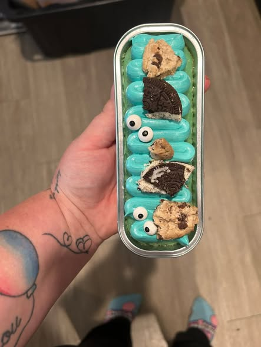
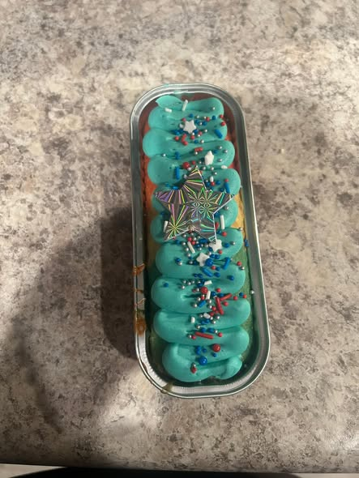
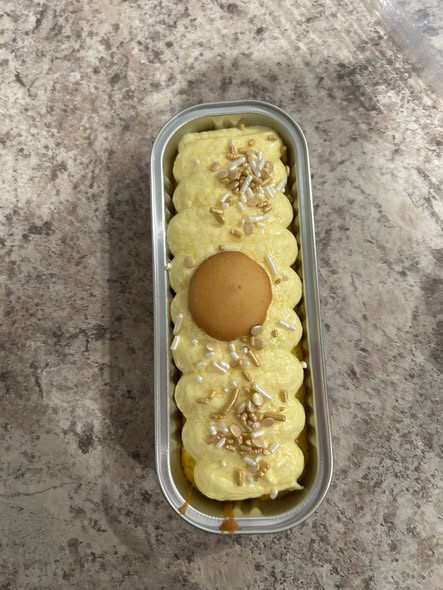
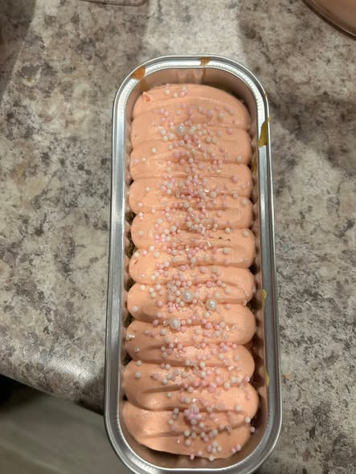
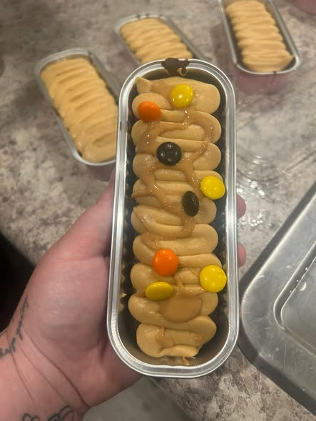
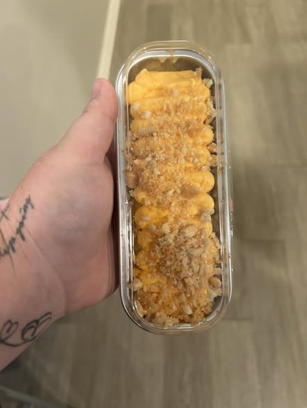
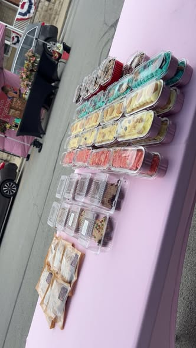
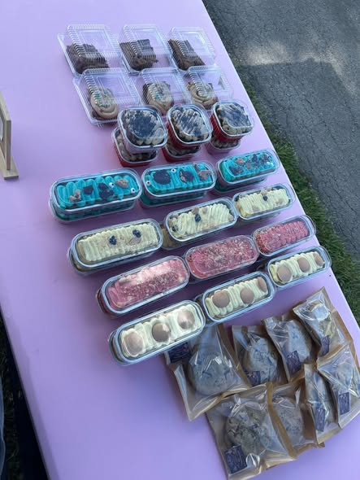
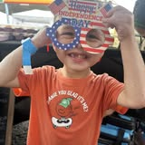

Cookie
Monster Cream Tin
Blue cream, cookie pieces, candy eyes, and the kind of color kids spot from across the room.
Hillsboro, Ohio
Dessert cups, stacked cookie creams, party trays, and pop-up sweets made in bright batches for people who want the table to look as good as it tastes.



The Sweet Drop

Blue cream, cookie pieces, candy eyes, and the kind of color kids spot from across the room.
Layered pudding, wafer crumble, whipped topping, and a clean spoon-ready finish.

Cookie bites, candy pops, and creamy layers packed for sharing or absolutely not sharing.

Soft, sweet, and topped with a sandy crumble that gives every bite some texture.

Packaged tins arranged for pop-ups, race nights, fireworks, birthdays, and weekend crowds.
Party Packs
Birthdays, graduation weekends, team nights, family cookouts, and “I need something fun by Saturday” moments. Shelby's can turn the flavor idea into a table-ready batch.
Birthday table, local event, team treat, or a weekend dessert run.
Bright and playful, classic pudding, cookie-heavy, or themed around colors.
Message for timing, flavor availability, pickup, and event quantities.
Pop-Up Table
The setup is part of the appeal: rows of tins, bold flavors, easy packaging, and enough color to pull people in before the first bite.


Ready for a batch?
For flavor availability, event appearances, party quantities, and custom tins, reach out on Facebook. That is where the newest menus and quick updates happen first.
Start on Facebook